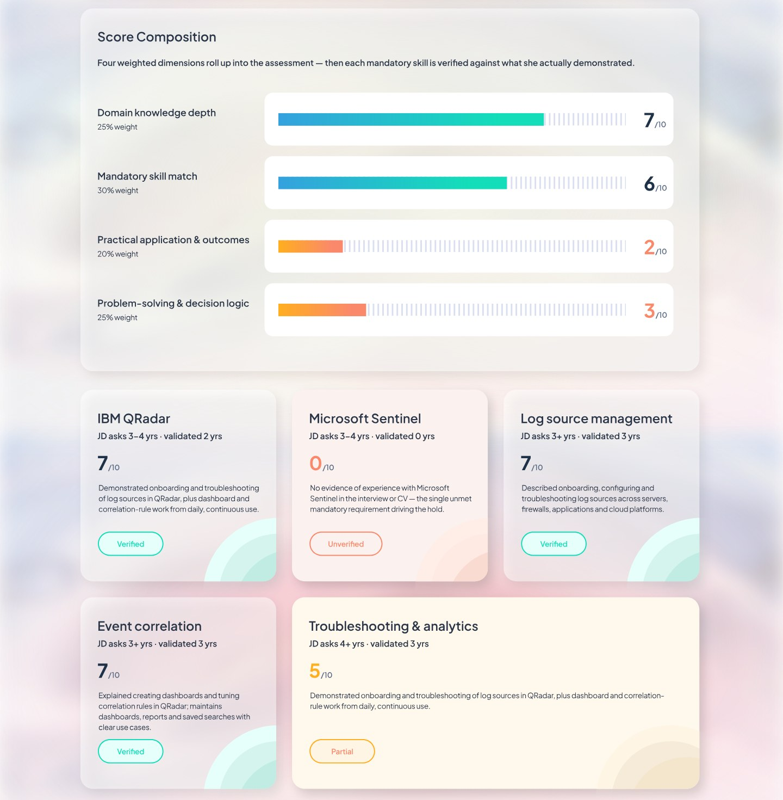
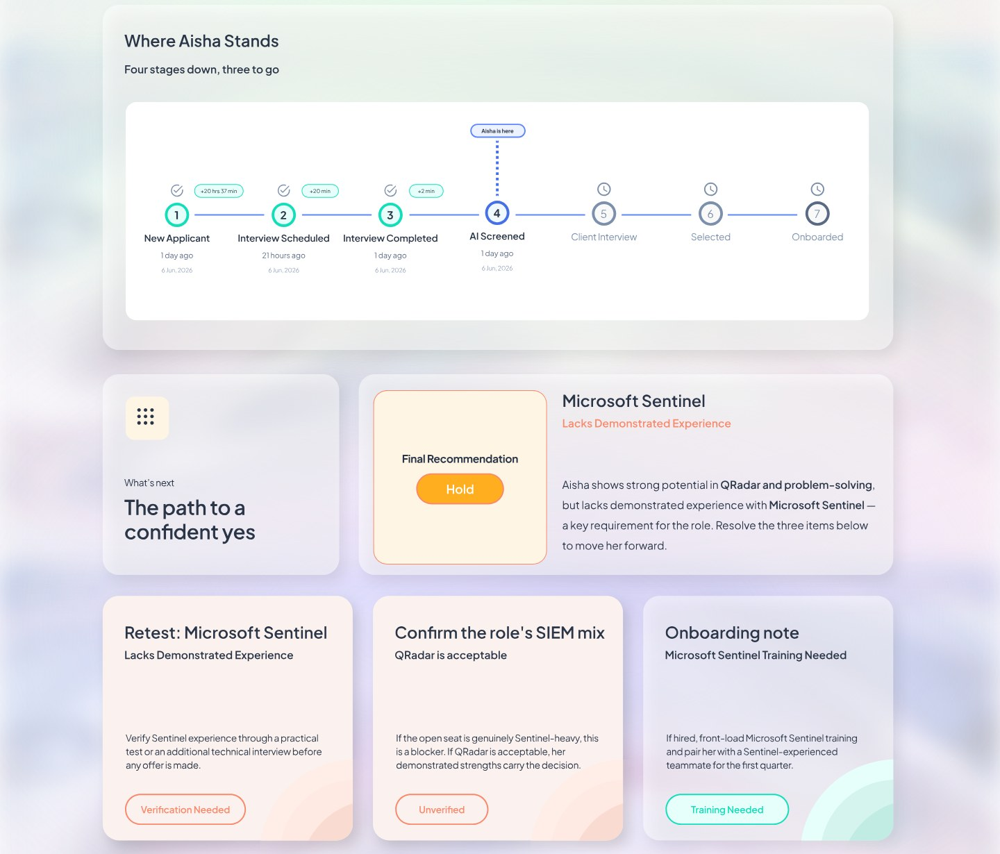
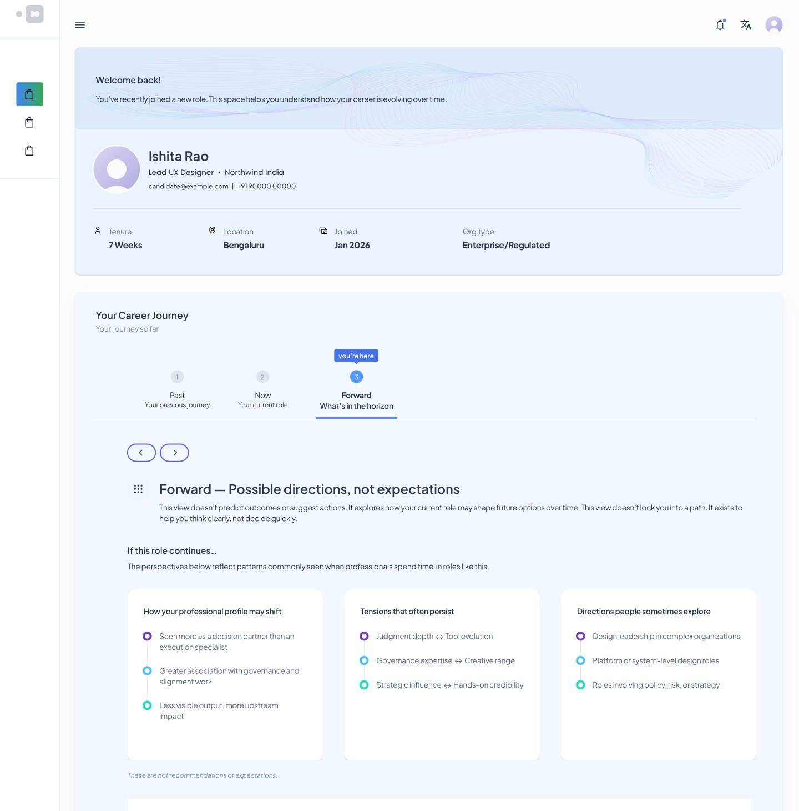

THIRTY YEARS OF THE WRONG PROBLEM.
Hiring platforms have been solving the wrong problem for thirty years. They optimized the pipeline: faster, more organized, better filtered. What they didn't fix was the quality of the decision, and the dignity of the person it's made about.
The platform is an in-house hiring intelligence product. I led UX from the ground up, starting not from a brief but from two questions asked in parallel. What would hiring look like if it was built around decision quality? And what would a career look like if the platform treated you as a person with a direction?
The Brief
“Design a hiring platform that uses AI to improve recruiter efficiency and candidate experience.”
That was the starting point. It was the wrong frame, and changing that frame became the first design decision.
THE PIPELINE METAPHOR IS BROKEN.
Every existing hiring tool is built on two shared assumptions. First, hiring is a pipeline management problem. Second, the candidate's relationship with the platform ends when the decision is made.
Watch a recruiter work for an hour and the first assumption breaks. They're slow not because the interface is inefficient, but because every evaluation makes them rebuild their read of the candidate from scratch. The profile is a data dump, not a decision surface. Every decision, even the tenth that day, starts from zero.
For candidates, the failure runs deeper. Job searching isn't a process problem. It's a problem of identity and direction, and no existing platform addresses it.
THE MOST CONSEQUENTIAL DESIGN GAP IN HIRING ISN'T IN THE PIPELINE. IT'S IN WHAT HAPPENS WHEN THE PIPELINE IS DONE WITH YOU.
INDICATOR INTELLIGENCE, NOT PIPELINE MANAGEMENT.
Hiring is not a pipeline problem. It is an indicator intelligence problem, for both sides.
For recruiters, the bottleneck is interpretation: drawing meaning from a person's capability and bringing it forward at the moment a decision is made.
For candidates, the bottleneck is continuity: understanding who you are, where you're going and what the gap is, whether or not you're looking for a job right now.
This reframe changed everything. Instead of designing a better applicant tracking system, we were designing an intelligence layer that serves both sides at once, and keeps serving the candidate even when a specific opportunity closes.
ONE INDICATOR FABRIC. TWO VALUE SURFACES.
The most important structural decision in the platform is one you don't see on any single screen. The platform is a dual system: hiring intelligence for recruiters and career intelligence for candidates, both running on the same indicator fabric.
When candidate indicators and recruiter evaluation indicators are built on the same model, matching becomes meaningful rather than mechanical. And the candidate's indicators always belong to them, not just for one application, but across their career.
Dual-system indicator architecture
Hiring Intelligence
Recruiters and clients · Profiles as decision surfaces · An AI copilot that explains · No score without its reason
Career Intelligence
Candidates · North Star · Career Map · Opportunity Orbit · Active across the whole career
- Indicator Fabric
- Ingestion
- Extraction
- Validation
- Matching
- AI Interpretation
- UX Output
- Feedback Loop
PROFILES AS DECISION SURFACES.
Decision 01
The Candidate Profile as a Decision Surface
The default mental model for a candidate profile is a container. We broke that model.
The profile here isn't built to hold information. It's built for one task: evaluating a candidate in depth, quickly and with confidence. Indicators are grouped by relevance to the role, not by category. The strongest evidence comes first. Gaps stay visible, because a recruiter who sees an unexplained gap can ask about it, and one who doesn't makes a worse decision.
The constraint I held through every iteration: nothing goes on the profile because it's available. Every element is there because it helps a recruiter make a better decision. Those are not the same thing.
Scores with their reasons
The interview score and the CV match sit beside a one-line read of what they mean.
Gaps in the open
The one unverified mandatory skill comes first, with why it blocks the decision.
Strongest evidence first
The skills that work in the candidate's favor follow, each with what was shown.
Decision 02
No Score Without Its Reason
Scores help. A recruiter or a client needs a fast, shared read on how ready a candidate is for a role. But a number on its own hides its reasoning, and people start to defer to it. Then the system's errors compound quietly.
So I set the rule that no score appears without its reason, on any screen. The match score and the AI interview score each come with the evidence behind them: what's strong, what's unclear and how to think about the gap.
I also argued against letting the AI rank candidates on its own. The AI suggests and explains, and a person makes every final call. That line is both an ethical position and a product differentiator, and it's the one I'm most proud of holding.

Weights in the open
Four weighted dimensions show how the overall score was built.
Checked against evidence
Each required skill shows what the role asks for and what was actually validated.
A low score explained
A zero comes with its reason, not just the number.

The AI suggests
The recommendation is Hold, and it says what would change it.
A person decides
Three next steps go to the recruiter: retest, confirm the role's needs or plan onboarding.
Progress in view
The tracker shows the stages done and the stages still to go.
CAREER AS A CONTINUOUS ARC.
Every existing hiring platform has an implicit model: you are a job seeker. This platform rejects that. The candidate is a person with a career, a trajectory that starts before any application and continues long after it ends.

Past, Now, Forward
The journey keeps going after joining, with the new role in context.
Directions, not verdicts
Possible paths are framed as options, not predictions.
Private by default
The candidate's own perspective is visible only to them.
Decision 03
The North Star: Trajectory, Not Title
Before anything else, the system needs to answer one question: where are you going?
Not what jobs are available, and not what you're qualified for right now. Given your indicators, your strengths and your emerging capabilities, what future are you building toward?
The North Star is not a job. It's a trajectory drawn from your indicators. The Career Map shows where you are. The Opportunity Orbit shows what's possible. The North Star is what you orient toward. The design constraint: it's always earned by the data, never made up for comfort.
Decision 04
Opportunity Orbit: Opportunities Around the Candidate
The Opportunity Orbit replaces the job list, the most dehumanizing interface in hiring, with an orbital model. Opportunities sit around the candidate, placed by how well their indicators align and how ready they are. The closer an opportunity, the stronger the match and the higher the readiness.
The candidate is not a query running against a database. They're at the center, and the field shows them where they stand against what's possible.

Where you stand
The strongest indicators come first, each with what it means for the next step.
Gaps as a path
A gap reads as evidence still to show, not a grade.
Why this matters now
The next action says what it will strengthen.
REJECTION AS AN INDICATOR EVENT.
In most platforms, rejection is an end state: silence. Here, rejection is a moment to recalibrate, and that needed its own protocol.
The five-step rejection sequence
Step 1: No Ghosting, by Design
Respectful communication is guaranteed. It's a rule of the system, not a feature.
Step 2: Indicators Update
The system updates from what the evaluation revealed. Discrepancies become Exploration Indicators.
Step 3: The Copilot Explains, Not Judges
“Your strongest indicators are here. The gap was here. Here's how to think about it.” Clarity, not a verdict.
Step 4: The Orbit Recalibrates
Opportunities reorganize around the updated indicators, so you see where you actually stand.
Step 5: The North Star Holds
A trajectory doesn't collapse because one application did. Calibration, not a verdict.
WE ARE NOT TRYING TO MAKE REJECTION FEEL GOOD. WE ARE TRYING TO REMOVE MEANINGLESSNESS FROM IT.
THE MISSING STATE.
Between every candidate action, after an application or an interview, the system goes silent. From the platform's side, that's a processing state. From the candidate's side, it's anxiety, loss of control and disengagement.
I named this the missing state. Not a missing feature, but a missing concept. The Transparency Tracker shows candidates where they are during evaluation. The hard constraint: no fake progress bars, no made-up optimism and no manipulative nudges. It had to be honest, or it would erode trust more than silence does.

Where you are, always
The application journey marks the current step and what comes after it.
What happens next
The next step says what it is, how long it takes and that it isn't a test.
Live status
Recent applications show their status as it changes.
Design Principle
“Systems fail not where they act, but where they go silent.”
WHERE IT STANDS.
Live
The recruiter and candidate portals are in production use, and the design work is ongoing.
Outcome metrics aren't published yet. They'll be added here once they can be shared.
WHAT THIS TAUGHT ME.
Designing a system from scratch, rather than inheriting someone else's architecture, is a different kind of work. The temptation is to move fast to screens. The discipline is to stay in the system model long enough to get the architecture right, because screens built on the wrong model will fail no matter how well they're designed.
THE SHAPE OF THE SYSTEM IS DEFINED AS MUCH BY WHAT WE REFUSED TO BUILD AS BY WHAT WE BUILT.